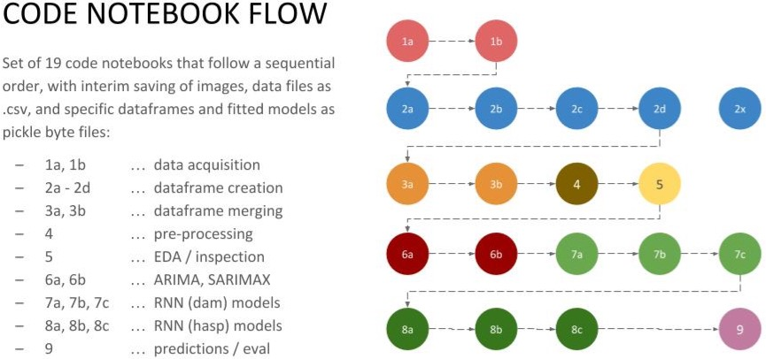

All Things Data Science
Don't Fear the Pickle: Using pickle.load and pickle.dump
Make your data science workflow faster and more modular with pickled python objects shared amongst multiple Jupyter notebooks
 Photo by Natalie Rhea Riggs on www.unsplash.com
Photo by Natalie Rhea Riggs on www.unsplash.com
What Is Pickling?
Early in the first months of my data science education, I began to hear about a technique with a funny name, “pickling”. It sounded like an unnecessarily complicated way to save a file. Just what is “byte serialization” anyway? And it had a syntax that didn’t make much intuitive sense to me. Not very pythonic. I decided to ignore it and just use the standard pandas command,
df = pd.read_csv(‘pathname/filename.csv’) to get my dataframe read into memory. To do the opposite, I merely used its complement, df.to_csv(‘pathname/filename.csv’) to export a dataframe safely to .csv file format. Simple, right? Alas, as my data science needs grew more elaborate, I began to run into limitations.
Fortunately, one of my TA’s (Ritchie Kwan) came to our rescue and walked our class through “pickling”, and I’ve never looked back. The term seemed whimsical to me, but I quickly realized its appropriateness. The pickling process in python does just what vinegar-based brining does to cucumbers and other foods… it preserves something for later use. Python-pickling does the same thing for python objects. It creates a serialized, byte-wise .pkl file that preserves a python object precisely and exactly.
Why Use It? The benefits of pickling...
As my data science projects went from simple academic exercises to open-ended real-world applications, I began to separate different phases and chunks of the problem into multiple files and codebooks. For collaboration on team project (typical in the workplace), any data science team needs to divide up the tasks, create separate sandboxes, and then come together when appropriate for the next step in the data science workflow.
Simple comma-separated files was no longer going to cut it for us. When I undertook a time-series prediction involving a time-zone shift, I ran up against very annoying deficiencies in the .csv file method. Time-zone shifts were being undone between saving a dataframe to .csv and then loading from that .csv file into a different jupyter notebook and dataframe object. More generically, one could easily forget to pass an ignore_index = True option at the correct time, resulting in “Unnamed0” titles for headings. Saving an object like a fitted model can’t be done with a .csv method at all (as far as I know)
I needed a simpler, more-resilient way to preserve and re-use any python object. This need became glaringly urgent during a recent project in which I wound up using nineteen different jupyter notebooks to step through the complete data science workflow. See the diagram below.

Example: Nineteen Jupyter Notebooks in a Project
Besides just doing data cleaning, joining multiple dataframes, dropping null value rows, occasionally imputing missing data, scaling, pre-processing, and doing train-test-splits, my own sanity required that I be able to preserve objects all the time. I wanted to be able to fine-tune all of my decisions along the way, and always have the option to go back to a previous “state” if I took a wrong turn. I hope you are nodding your head thinking about all the times it would be nice to just save a dataframe as an object/variable, and then just pick it up later.
Maybe you restarted your kernel. Maybe you want to separate the next step in your workflow to a multiple-branched experiment to try a few different competing methodologies (think stemming vs. lemmatizing in NLP, or K-means clustering vs. DBScan algorithms in a transfer learning workflow). What about fitting models that that require a lot of time and computing power? Being able to preserve a fitted model for use in comparative evaluation is absolutely necessary. There’s no time to re-fit models like ADA Boosting or Gradient Boosted models that can take hours to converge. The solution that I use? Pickle it!
How to Pickle and Unpickle
In your imports section, be sure to import pickle before executing pickling or unpickling code. To save any Python object as a pickle (.pkl) file, use this syntax:
with open(‘../pathname/source_object_name.pkl’, ‘wb’) as f:
pickle.dump(object_name, f)
Let’s parse this snippet to understand it. As you can see, the "pickle.dump" method is called inside of a "with…open…as" statement, which employs context-manager objects. See Dan Bader’s excellent tutorial for more detail on the with command.
In short, the "with...open...as" command takes care of robustly, automatically closing the file that is opened by the open command, which in turn makes the pickling process clean and easy. The ‘wb’ parameter stands for “write binary”, and the ‘f’ is a temporary variable. The "object_name" refers to the object you wish to preserve. For example, it could be: a dataframe (df), a matrix or array (X_train_sc), a fitted model (rand_forest_1), or anything else you want to save. You will see the .pkl file saved in the location you specify in "pathname".
To load any pickle (.pkl) file into a python object, simply do its opposite, as below:
with open(‘../pathname/source_object_name.pkl’, ‘rb’) as f:
dest_object_name = pickle.load(f)
A complement to the "pickle.dump" snippet above, the "pickle.load" snippet unpickles the .pkl file specified in the pathname, and assigns it to "dest_object_name", which can be anything you like. The ‘rb’ argument, as you might guess, stands for “read binary”. That’s it, now use the object in your code!
When Not to Pickle Due to Security Risk
One important word of warning. There is no processing or interpretation of the Python object as it is pickled or unpickled. It is an extremely lean and efficient process, and therein lies its one risk. It is possible to suffer unintended consequences to your computer or to fall victim to malicious code if you unpickle a file of unknown or untrusted origin. So, while this is generically good advice, I would urge a simple practice with regard to pickle files… DON’T USE IT EXCEPT FOR YOUR OWN CODE! This simple rule should keep you out of trouble. Go forth and brine!
Final Note: The JSON and cPickle Alternatives
One important word of warning. There is no processing or interpretation of the Python object as it is pickled or unpickled. It is an extremely lean and efficient process, and therein lies its one risk. It is possible to suffer unintended consequences to your computer or to fall victim to malicious code if you unpickle a file of unknown or untrusted origin. So, while this is generically good advice, I would urge a simple practice with regard to pickle files… DON’T USE IT EXCEPT FOR YOUR OWN CODE! This simple rule should keep you out of trouble. Go forth and brine!
Pickle is still my go-to technique when working purely in Python and want a simple method for preserving and later re-using any object. However, this tutorial would be incomplete if there were no mention of the cPickle or JSON alternatives for object serialization.
Identical in functionality and file format to the pickle statement, cPickle is written in the C programming language and is about 1000 times faster than pickle. You won’t notice this performance difference with most objects, but it will be meaningful in larger files. To use, simply substitute Pickle with cPickle everywhere in your code, including in the import section. The only drawback to cPickle versus pickle is that the use of the C language in cPickle rules out any customization that is possible with the pickle command. This may not be relevant for most day-to-day use of serialization.
JSON (JavaScript Object Notation) is a programming-language-agnostic serialized file format, so its use is recommended if you are likely to use the serialized object across language platforms. It is faster than pickle and has some security benefits as well, so if you need serialization across platforms and between users, this might be the way to go.
But for quick, painless python object serialization for your own use (and your team's), I don't think anything is quite as kosher as a pickle.
Resources:
- You can the relevant pickling / unpickling code in this GitHub gist.
- Official python pickle documentation can be found here.
- Dan Bader’s tutorial on the with statement can be found here.
- Python documentation on the with statement can be found here.
 Photo by Monika Grabkowska on www.unsplash.com
Photo by Monika Grabkowska on www.unsplash.com

About The Author
Manu Kalia is a data scientist living and working in San Francisco, CA. A curious, persistent, and articulate data-scientist & entrepreneur skilled in turning chaos into order, and coaxing insights from white noise through data science. Inspired to solve “big” problems that improve life for the many... their health, their wallets, and their environment, using domain expertise in Energy, Renewables, and SmartGrid Management.